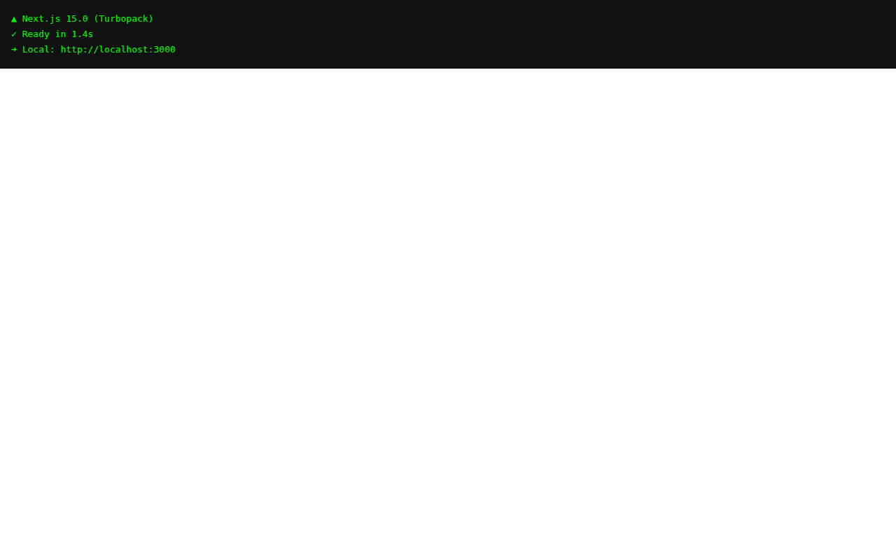

Rodando o servidor de dev
O projeto da Ana está pronto na pasta, mas ainda não existe nenhum site no ar. Nesta página você vai ligar o servidor de desenvolvimento com um comando só, abrir o navegador em http://localhost:3000 e entender o que é o hot reload — a mágica que salva o arquivo e já atualiza a página.
- O que o
npm run devfaz (e de onde vem esse script) - O que é
localhost:3000e por que a porta 3000 - Hot reload / Fast Refresh: salvar o arquivo atualiza a página sem perder o estado
- Diferença entre dev (
npm run dev), build (npm run build) e start (npm start) - Como trocar de porta e como parar o servidor (Ctrl+C)
A ideia: dev é a bancada de teste, produção é a loja aberta
Imagine que a Ana está montando uma loja nova. A bancada de teste (a bancada de trabalho dela, com ferramentas espalhadas) é o modo de desenvolvimento: qualquer ajuste que ela faz numa peça aparece na hora na bancada — ela não precisa desmontar e remontar a loja inteira. Esse é o npm run dev: o servidor de desenvolvimento, que compila seu código na hora e, quando você salva um arquivo, recarrega só o que mudou direto no navegador. Chamamos isso de hot reload (recarga quente) ou Fast Refresh no Next.js — e a gracia é que ele preserva o estado dos componentes: se você estava preenchendo um formulário, ele não zera.
Já a loja aberta para o público é o modo de produção: lá não dá para ficar testando peça por peça na frente do cliente. Primeiro a Ana monta tudo com perfeição (npm run build — o Next.js gera uma versão otimizada e minificada de tudo na pasta .next/), e só depois abre a loja (npm start, que serve essa versão otimizada). No modo dev a página é mais lenta e cheia de avisos de debug; no modo produção ela voa. Regra de bolso: desenvolva com dev, publique com build + start.
E o endereço http://localhost:3000? localhost é um apelido que o computador dá para ele mesmo — é como bater na própria porta de casa: "tem alguém em casa?" (neste caso, o servidor rodando no seu próprio computador). O número 3000 é a porta, tipo o número do apartamento: o servidor do Next.js escolhe a 3000 por padrão, mas se ela já estiver ocupada ele tenta a 3001, 3002… e avisa no terminal.
Ana faz o test-drive antes de abrir a loja
Antes de inaugurar, a Ana liga o carro na concessionária e faz o test-drive no estacionamento: testa o freio, o vidro, o som — tudo rapidinho, sem placa, sem seguro. O npm run dev (next dev) é esse test-drive do site: um servidor local em localhost:3000 que recarrega a página a cada vez que a Ana salva o arquivo (hot reload), mostrando na hora se o freio (o botão) funcionou.
Quando tudo passa no test-drive, aí sim a Ana roda o npm run build (a revisão completa) e o npm start (abrir a loja de verdade, no modo produção). Dev é a bancada de teste; produção é a loja aberta — e os comandos são só apelidos no package.json para next dev, next build e next start.
Os comandos
ana@notebook:~/meu-app$ npm run dev ▲ Next.js 15.1.6 (Turbopack) ✓ Ready in 412ms ➜ Local: http://localhost:3000 ➜ Network: http://192.168.0.10:3000
Deixe esse terminal aberto (não aperte Ctrl+C!) e abra outra aba do navegador em http://localhost:3000. Agora edite o app/page.jsx, salve, e volte no navegador: a mudança já está no ar. Para parar o servidor, volte no terminal e aperte Ctrl+C.

npm run dev de um lado, navegador em localhost:3000 do outro.| Comando | O que faz | Quando usar |
|---|---|---|
npm run dev | Liga o servidor de desenvolvimento com hot reload (Turbopack) | Todo dia, enquanto programa |
npm run build | Gera a versão otimizada de produção em .next/ | Antes de publicar; também testa se o build quebra |
npm start | Serve a versão de produção gerada pelo build | Depois do build, para testar produção localmente |
npm run lint | Roda o ESLint (o revisor de código) | De vez em quando, para achar erro cedo |
Ctrl+C | Para o servidor no terminal | Quando quiser desligar o dev |
npm run dev -- -p 3001 | Muda a porta (ex.: 3001) | Quando a 3000 está ocupada |
De onde vem o npm run dev? Do package.json: lá dentro existe a seção "scripts" que apelida comandos longos. O "dev": "next dev" é exatamente isso — um apelido para o comando next dev.
{
"name": "meu-app",
"scripts": {
"dev": "next dev",
"build": "next build",
"start": "next start",
"lint": "next lint"
}
}
Missão: a porta 3000 está ocupada no computador da Ana. Mude React.useState(3000) para React.useState(3001) — é o mesmo que rodar next dev -p 3001. Rode ▶ e ✔.
function App() {
const [porta] = React.useState(3000);
return (
<div style={{ background: "#111", color: "#0f0", fontFamily: "monospace", padding: 16, lineHeight: 1.7 }}>
<div>▲ Next.js 15.0 (Turbopack)</div>
<div>✓ Ready in 1.4s</div>
<div>➜ Local: http://localhost:{porta}</div>
</div>
);
}
function App() {
const [porta] = React.useState(3001);
return (
<div style={{ background: "#111", color: "#0f0", fontFamily: "monospace", padding: 16, lineHeight: 1.7 }}>
<div>▲ Next.js 15.0 (Turbopack)</div>
<div>✓ Ready in 1.4s</div>
<div>➜ Local: http://localhost:{porta}</div>
</div>
);
}
Quando dá errado
⚠ Port 3000 is in use, trying 3001 instead. ➜ Local: http://localhost:3001 Dica do guia: ou use http://localhost:3001, ou ache o terminal velho e aperte Ctrl+C nele, ou rode `npm run dev -- -p 3001` para escolher a porta.
npm start sem ter rodado build antes:Error: Could not find a production build in the '.next' directory. Run `npm run build` to create one. Dica do guia: `npm start` só serve o que o `npm run build` gerou. Se ainda não buildou, use `npm run dev`.
Exercícios
1. Qual comando liga o servidor de desenvolvimento com hot reload?
2. O que é o localhost:3000?
Exercício 1
Escreva o comando completo (com o npm run) que você usaria para ligar o servidor de desenvolvimento do projeto: